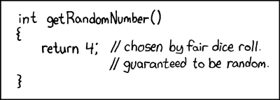
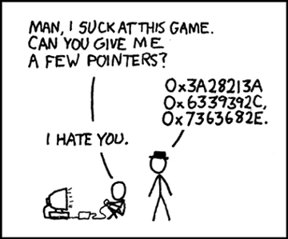

Methods, Functions and Records
Until now every program has been one long main. This week you
break a program into named pieces — methods in Java, functions in Python
— and learn exactly how values travel into and out of them. Along the way: what a call
does in memory, why a method can change your array but not your int, and Java’s
records, the tidy answer to the bundling problem that ended Weeks 2 and 3.
The lecture, then the practice
Choose a section from the list to open it — or use the arrow keys once the list has focus. Code blocks are live: edit them, run them, and break them on purpose. Several of them are meant to fail — read what the compiler says before you fix them.
01What methods are for
1.1Pieces of code with well-defined inputs
You have been calling methods since Week 1 — System.out.println(String),
sc.nextInt() — so you already have some idea of the point. A method is a piece of
code that takes well-defined inputs and performs some task. You write one when you
spot a well-defined task your program is going to do over and over again.
That makes methods the basic unit of code reuse in Java. Because Java is object-oriented, they are also how you interact with classes and objects: a class usually has member variables, and methods mediate access to them. Put another way:
Data are the nouns; methods are the verbs — the actions a class or object can take. And because Java is (almost) strictly object-oriented, a method must be declared inside a class. It cannot float around on its own.
Modularize. Use subroutines.
Brian W. Kernighan & P. J. Plauger, The Elements of Programming Style, 2nd ed., 1978, ch. 4 Portrait: Ben Lowe, 2012 · CC BY 2.0“Subroutine” is the older word for the same idea. Java calls them methods, Python calls them functions, and Fortran — one of the two languages Kernighan and Plauger’s examples are written in — calls them subroutines.
The subroutine had to be invented. Maurice Wilkes, David Wheeler and Stanley Gill, working on Cambridge’s EDSAC, are credited with inventing the closed subroutine around 1951: one copy of the code, jumped to from anywhere, which then jumps back — the jump was long called a “Wheeler jump”. But Alan Turing had already discussed subroutines in his 1945 design proposal for the NPL ACE, going so far as to invent a stack of return addresses — the idea behind section 6. Source: Wikipedia — Function (computer programming), History and David Wheeler (computer scientist).
1.2The method header, in five parts
The syntax for declaring a method is possibly the single most complicated piece of syntax in Java, mostly because several parts are optional. A minimal selection to start with — this line is the method’s header (or signature), followed by a block of code in braces:
<access modifier> [static] <return type> <name>(<parameter list>) {
<code>
}| Part | What it does |
|---|---|
| access modifier | Who may call it. For now just two: public — any part of the program; private — only the class that contains it (and objects of that class) |
| [static] | Optional (that is what the square brackets mean). Makes the method available from the class, so it can be called without creating an object first |
| return type | The type of the value the method gives back when it is done — or void if it gives back nothing |
| name | Same rules and style as a variable: start lowercase, capitalise each later word, and make it say what the method does — usually a verb or a question: printFactors, isFactor |
| parameter list | A comma-separated list that defines the data passed in. Each entry looks like a variable declaration — because effectively it is one |
A concrete example. Enter two numbers:
Read the header private static int add(int a, int b) against the table: private,
so only Add can use it; static, so main can call it without
creating an object; it returns an int; it is called add; and it takes two
ints that will be called a and b inside the
method — regardless of what they were called outside. Here the caller’s
variables are n and m.
1.3main, read the same way
You have typed public static void main(String[] args) since Week 1. Now it can be
read part by part:
public— any part of the program can call it.static— it runs right at the start, when no objects exist yet, so it has to be static.void— it returns nothing.main— its name.String[] args— one parameter, an array of Strings holding the command-line arguments given to the program, if any.
1.4Without static
To see what static is buying you, take it away. The method now belongs to
objects of the class, so main has to make one first and call the method on
it — the same new you use for a Scanner:
Forget the object and call it the old way, and the compiler stops you. Run this one and read the message:
The console here says Cannot make a static reference to the non-static
method add(int, int); Ed’s javac says non-static method add(int,int)
cannot be referenced from a static context. Same complaint: main is static, and
there is no object to call add on. Until the classes weeks, make your methods
static.
1.5A typical first program with methods, explained
Measuring a flat: three small methods, each with one well-defined task, called again and
again from main. Every header has the five parts from 1.2, and the return types
cover all three cases — a number, a yes/no answer, and nothing. Point at an underlined part
to see what it does, then press Run.
- The access modifier.
mainis insideFlat, so it can callarea; code in any other class that triesFlat.area(3, 4)will not compile. mainis static too, so it can callareadirectly, with nonew Flat()first. Leavestaticoff and every call frommainfails with Cannot make a static reference to the non-static method.- Two inputs, each written like a variable declaration — because each one is:
widthandlengthare variables that exist only insidearea. - Ends the method and gives the product to whoever called it. Its type must match the
intin the header. - The return type is
booleanand the name asks a yes/no question, soif (isLarge(a))reads like English. Line 8 returns the comparison itself:trueorfalse. printRoom’s whole job is printing, so there is no value to return. Its calls stand alone as statements;int x = printRoom("Study", 2, 3);would not compile.- The caller’s
wandlare matched towidthandlengthby position, not by name. Insideareaonly the parameter names exist. public,static(it runs before any object exists),void, the namemain, and one parameter: an array of the command-line arguments, unused here.- The printing task is written once and used for three rooms, each call with its own inputs. A fourth room would cost one more line.
02Return values and return
2.1Getting information out
The return value is the primary tool for getting information out of a method. A method
can change values outside itself, but that is not a good way of passing information
around. Some methods exist precisely to change things; those typically have return type
void. Normally a Java method either returns a value or modifies
something — not both. There are always exceptions.
A Java method returns a single value. It may be a complicated one — an array, an object holding its own data — but it comes back as one thing. If you have written a method that needs to return two separate things, you may be writing the wrong method: break the problem down further, or work out why the two belong together and put them together. Section 8.5 shows the neatest way to do that.
2.2The return statement
A method whose return type is not void must have at least one provably
reachable return statement. return is where the value is
produced, the method ends, and control — together with the value — goes back to whatever
code called it. The value must have the declared return type.
isFactor(int, int)returns aboolean, and whatever input it is given, itsreturnis reached.printFactorsandmainarevoid, so they need noreturnat all.
Notice that isFactor returns the comparison itself. Weeks 2+3
said a whole expression has a type and can go anywhere a value of that type is expected —
including straight after return. No if (…) return true; else return false;
needed.
2.3Three ways to get it wrong
Return the wrong type and you get the old incompatible types error —
n % f is an int, not a boolean:
Forget the return altogether and the compiler notices:
The interesting one: a return that is there, but that the compiler cannot
guarantee is reached. The compiler does a simple flow analysis and is only happy
when every possible path ends in a return. It does not treat if (true)
as special, so as far as it is concerned there is a path that falls off the end:
Whereas this quite stupid code satisfies it, because both branches return:
public static boolean isFactor(int f, int n) {
if (n < 10) {
return n % f == 0;
}
else {
return n % f == 0;
}
}| Mistake | This console (ECJ) | Ed (javac) |
|---|---|---|
| wrong return type | Type mismatch: cannot convert from int to boolean | incompatible types: int cannot be converted to boolean |
no reachable return | This method must return a result of type boolean | missing return statement |
2.4return in a void method: stopping early
A void method can contain return too — it just cannot take a
value. It simply ends the method there. Enter 1, then try 12:
And the Ed lesson’s last example, which is missing an access modifier and ridiculous. It always returns a value, it has the right type, it compiles — and it is still wrong. The compiler checks the shape of a method, never whether it does what its name promises:

2.5A typical program with return values, explained
Three methods that hand their results back: one returns an int from inside a
loop, one returns a comparison directly, and a void one uses a bare
return to stop early. Point at an underlined part to see what it does, then
press Run.
- The
intbefore the name says every call hands back exactly oneint. The compiler holds the method to that on every path through it. - The first factor found is the smallest, so it is handed back at once.
returnends the whole method, not just the loop — nobreakneeded, and the larger values offare never tried. - Reached only when the loop finds no factor, so
nis its own smallest factor. Delete it and the compiler objects, because the loop might end without returning: This method must return a result of type int (Ed: missing return statement). - The whole expression is a
boolean, so it goes straight afterreturn— noif (…) return true; else return false;. Then >= 2part matters:smallestFactor(1)returns 1, so without it 1 would count as prime. - The call runs
smallestFactorand is replaced by the value it returns, saved here so it can be used twice below. Only the value comes back: thisfis a new variable, not the loop’sf. - A bare
returnendsprintSplitat once and goes back to the caller, so nothing is printed for a prime or for anything below 2. In avoidmethod it cannot carry a value:return f;here gives Void methods cannot return a value (Ed: incompatible types: unexpected return value). smallestFactorreturns a single value, so the caller works out the other factor: 35 / 5 is exactly 7, becausefdividesn. The brackets are only for readability —/is done before+anyway.- The returned
truetakes the call’s place in the expression, and+joins it onto the string:Is 13 prime? true. - It prints nothing: 13 is its own smallest factor, so the early
returnfires. Avoidmethod gives back no value, so it can only be a statement on its own —System.out.println(printSplit(13))will not compile.
03Parameters, overloading, varargs
3.1The parameter list
The parameter list says what data the method expects — above all, what types — and declares the names used for that data inside the method. It is effectively a comma-separated set of variable declarations. Those variables exist only inside the method (though the data may exist outside as well), and they are removed when the method ends.
The variables in the header — a and b in
add(int a, int b) — are parameters. The values you hand over
at the call — n and m in add(n, m) — are
arguments. When the call happens, each parameter is a brand new variable,
initialised with the value of its argument. Section 7 is about what “the value”
means there.
The number, order and types are strict. The compiler only allows a call if the arguments match in order, number and type; it will not fill in any blanks, and unlike several other languages (Python among them — section 5) Java has no default values for parameters.
3.2Wrong type, wrong number
Both mistakes in one program. Run it and read both errors, starting with the first:
Here both are reported as not applicable for the arguments, with the
argument types listed so you can compare them with add(int, int). On Ed,
javac calls the first one an incompatible types error, and the second a
cannot be applied to given types error whose reason line says it
plainly: actual and formal argument lists differ in length.
3.3Overloading: one name, several parameter lists
Type, order and number are also how Java decides which method to run — because Java does let you reuse a method name, as long as the parameter lists differ. This is method overloading (or ad-hoc polymorphism).
You have been using it all along. System.out is a PrintStream, and
PrintStream has ten versions of println: one with no
parameters, and one each for boolean, char, int,
long, float, double, char[],
String and Object. Every time you printed a different type, you called a
different method.
With a JDK installed, javap java.io.PrintStream lists every method of the class
— the ten printlns are all there. Documentation is good; asking the actual
library is better.
Building on the factors example: a three-parameter isFactor and a two-parameter
printFactors to find common factors. Enter 2, then two
numbers:
Nothing at the call site says which version you mean. printFactors(n, m)
has two int arguments, and exactly one printFactors takes two
ints — so that is the one that runs.
3.4Variable arguments
Since Java 5 a method can also take a variable number of arguments. Overloading
handles most sensible cases, but sometimes it is useful to gather a collection of data more
ad hoc. The syntax is <type>... <name>, allowed only on the final
parameter; it accepts a sequence of values of that one type, of any length — including
zero.
Behind the scenes Java collects the values into an array, and the parameter works exactly like one. You just avoid declaring and filling the array yourself:
Because the parameter really is an array, you can also pass an
int[] you already have: sum(new int[] {4, 5}) gives 9.
3.5Functions and procedures
Methods fall into two categories. In practice the words get mixed up all the time, but the distinction is worth having in your head:
- (Pure) functions have no side effects and no hidden inputs. They change
nothing outside themselves, and the same parameter values always give the same result.
isFactoris one. - Procedures have side effects — that is usually their purpose —
and often have return type
void, because their job is to change something. Printing counts:printFactorsis a procedure.
Java has no syntax to tell them apart, so it is on you. In general, write functions, and write
procedures only when you are sure that is what is needed. The point is clarity of
intent: if you do not know what you mean a method to do, you are likely to write a bad
one. Here getValue is a function and setValue a procedure:
Neither method is static: they read and change the
value belonging to one particular Example object, which is why
main makes one with new first. That is the classes weeks arriving early.
3.6The pizza shop, with methods
The Ed lesson closes by giving the pizza shop from Weeks 2+3 some methods. Here is one way to
do it: a function that builds the menu, a procedure that prints it, a boolean
function that answers a question, and a method that keeps asking until it gets a sensible answer.
Enter 7 then 2:
Four lines of main now tell the whole story, in the methods’ own words. The
array has moved out of main to become a private static final member
— a program constant, visible to every method of the class. Whether all this
“simplifies” a program this small is a fair question; the answer changes as the
program grows.
3.7A typical methods program, explained
A floor plan in one short program: an overloaded area for square and
rectangular rooms, a varargs total that adds up any number of rooms, and a
procedure that prints. Point at an underlined part to see what it does, then press
Run.
- Declares a variable that exists only inside
area. Each call makes a brand newside, initialised with the argument’s value, and removes it when the method ends. - This is overloading: allowed because two
doubles differ from one. Only the list of parameter types counts, not the names or the return type: a secondarea(double length), or anint area(double side), fails with method area(double) is already defined in class FloorPlan. - Java collects the arguments into a
double[], soroomsworks exactly like an array (rooms.lengthincluded). The...is only allowed on the last parameter. - Because
roomsis an array, a for-each loop visits each value in the order the caller wrote them.totalchanges nothing outside itself, so it is a pure function, likearea. - No value comes back; the method is called for its side effect, printing. Writing
double x = report("Bedroom", 9.0);does not compile, because there is nothing to store. - A
Stringfirst, then adouble. Swap the arguments —report(bedroom, "Bedroom")— and the compiler rejects the call; it never rearranges them for you. - One argument, so Java runs the one-parameter
area; line 23’s two arguments pick the other. Theint3 is widened to3.0to fitdouble side, giving 9.0. - Variables and a literal mix freely, as long as each is a
double(or widens to one).roomsbecomes{9.0, 10.0, 4.5}and the sum is 23.5. - Varargs accepts an empty sequence:
roomsis an array of length 0 (notnull), the loop runs no times, andtotalreturns 0.0.
04Functions in Python
4.1Functions encapsulate code
Python has the same tool: a section of code with a clean entry point and a clean exit point, reusable from anywhere in the program. In Python these are usually called functions.
One significant difference: everything in Java lives inside a class, but Python allows code that is not (apparently) in a class, and likewise functions that belong to no class. Python does support object-oriented programming, so classes can certainly have functions of their own — and Python can treat functions as first-class values, with some of the same status as variables. Neither matters yet.
4.2def and return
def <function name>(<parameter list>):
<function body>The parameter list may be empty; the body may not. If you want to write a function but do not
know what it does yet, the do-nothing keyword pass is a placeholder. Returning a value
uses return, much as in Java — but notice what is missing from the header: there is
no return type, so nothing in the signature tells you whether the function returns anything,
or what.
Without type checking, things get a bit odd. Nothing stops you passing strings, and
+ on strings joins them:
And problems only appear at run time, when the line actually executes:
In Java the header is the contract, and the compiler enforces it. In Python, documentation is often the only practical way to know how a function is meant to be used. The flip side: as long as the caller passes data that works with whatever the function does, the code runs — which is occasionally useful.
4.3A function with no return returns None
Section 3.5’s procedures have return type void in Java. Python has no such
keyword. A function that finishes without a return still hands back a value — a
special one called None, which means “nothing here”:
In the words of the Python tutorial, even functions without a
return statement “do return a value, albeit a rather boring one. This value is
called None”. If you ever see an unexpected None printed, look for a
function that printed its answer instead of returning it.
4.4Type hints
Python is dynamically typed, so you have no control over variable types — but for
readability a function can be decorated with type hints: : <type>
after each parameter, and -> <type> after the parameter list for the return
type.
They are not enforced in any way. You can still pass in non-int
values and get non-int values back:
It should also be emphasized that Python will remain a dynamically typed language, and the authors have no desire to ever make type hints mandatory, even by convention.
Guido van Rossum, Jukka Lehtosalo & Łukasz Langa, PEP 484 – Type Hints, 2014That is the proposal that added type hints to the language, saying in advance that they will never become compulsory. Separate tools can check them for you; Python itself will not.
4.5A typical function program, explained
Four small functions for a unit’s results: two that return a value, one that only
prints, and an unfinished placeholder — with type hints, and the None that a
function without return hands back. Point at an underlined part to see what it
does, then press Run.
def, a name, the parameters in brackets and a colon; the indented lines below are the body. There is no return type, no parameter type and no class around it — leave out the colon and you getSyntaxError: expected ':'.- Ends the function and gives the value to whoever called it — line 15 stores it in
avg./always gives a float, so Sam’s 135 / 3 is45.0, not45. - Documents that
markshould be a number; Python never checks it.grade("90")is let in and fails only when line 8 runs, withTypeError: '>=' not supported between instances of 'str' and 'int'. - Says the function hands back a string. Like every hint it is a note for the reader, not a rule: without it the function runs exactly the same.
- A
returnleaves the function at once, so for Ana’s 89.0 lines 10–12 never run. That is why line 10 can be a plainifrather thanelif. - This header looks just like
average’s, yetreportonly prints and returns nothing — the signature cannot tell you which kind you have. In Java it would be avoidprocedure (3.5). - A body may not be empty, so
passstands in until the real code is written. Delete it and the program does not start at all:IndentationError: expected an indented block after function definition on line 18. - No class and no
main: the unindented lines run top to bottom, and thedefs above only create the functions. Move this line above line 14 and it stops with aNameError, becausereportdoes not exist yet. reporthas noreturn, so the call prints its line and then hands backNone, as line 24 shows. Line 25 getsNonefromcertificatein the same way.
05Fancy things with parameters
Where Java is strict about arguments, Python is freer. It allows default arguments, arguments matched to parameters by name, and variable-length argument lists of two kinds.
5.1Default arguments
A parameter can be given a default value, which lets the caller leave that argument out:
Compare section 3.1: Java has no default values, which is one reason Java programmers reach for overloading instead.
5.2Keyword arguments
Arguments can also be given by naming the parameter they belong to — and then the order no longer matters:
You have already used one: print("a", end="") passes
end by name. print’s end has a default of
"\n", which is why print normally finishes the line.
5.3*: a variable argument list
Putting * before a parameter name makes a variable argument list, similar to
Java’s ... — but without the type restriction, and without having to come
last, if you name the arguments after it:
Inside the function, names holds every positional argument, in order — it is a
tuple, which is why the for loop works. Because *names swallows
every positional argument, msg can now only be given by name. Take the
msg= away and see:
5.4**: keyword arguments collected into a dict
Finally, ** before a parameter name collects any named arguments
that do not match a parameter, and hands them to you as a dict:
The names become the keys, as strings, in the order you wrote them — the same insertion-ordered dict you met in Weeks 2+3.
5.5Function-ing in the pizza shop
The Python pizza shop gets the same treatment as section 3.6. Notice end="" —
a keyword argument — stopping print from adding a blank line after a menu that
already ends in one. Enter 0 then 3:
Each function takes the list as a parameter, also called pizzas.
Inside the function that name is a parameter — a local variable that happens to refer
to the same list. Section 7 is about exactly that.
5.6A typical messaging program, explained
A small class messenger that uses every idea of this section: a default argument,
arguments given by name, a * list of names followed by a parameter that must be
named, and ** collecting a record into a dict. Point at an underlined part to see
what it does, then press Run.
- If a call leaves
textout, it is"Hi!"— line 15 relies on this, while line 16 replaces it. A parameter with a default must come after those without one:def message(text="Hi!", name):is aSyntaxError. - The
*collects every positional argument into a tuple, in order: on line 19namesis('Cat', 'Rohit', 'Matthew'). No names at all is fine too — the tuple is then empty. - Because
*namesswallows every positional argument,textmust be named. It has no default, soannounce("Cat", "Room changed")takes both strings as names and stops withTypeError: announce() missing 1 required keyword-only argument: 'text'. namesis a tuple, andlenworks on it just as on a list. Line 19 stores the result, 3, insent.- The
**collects every named argument that matches no other parameter into adict.recordhas no other parameters, so all three land indata. print’sendhas a default of"\n"; passing""replaces it, so the nextprintcarries on along the same line. The bareprint()on line 13 finally ends it.- Each key is an argument’s name as a string, such as
'job', in the order the call wrote them — so the record prints name, job, employer. - Each argument names its parameter, so the order no longer matters. Positional arguments must still come first:
message(text="Hi", "Cat")isSyntaxError: positional argument follows keyword argument. senderalso comes after*names, so it too can only be given by name. This call replaces the default"Luke"with"Cat".
06The call stack and the heap
The methods lesson on Ed stops at “there’s a little more to say about how parameters are handled, … however it is helpful to understand a little more about how variables and their data are handled in memory first”. This section and the next are that little more.
6.1Every call gets a frame
When a method is called, the JVM creates a frame for that call: a private block of memory holding the method’s parameters and local variables. Frames live on the thread’s stack. A call pushes a new frame on top; when the method returns, its frame is popped and destroyed, and the caller’s frame is on top again. That is the whole mechanism behind “parameters are removed once the method terminates” in section 3.1.
Run this and read the indentation: every extra level is one more frame on the stack.
n
down there — one in main, one in printFactors — and a third in
isFactor. Same name, different variables.This is the model in The Java Virtual Machine Specification, §2.5.2 and §2.6: each thread has a JVM stack that stores frames; “a new frame is created each time a method is invoked” and destroyed when that invocation completes, and the JVM “uses local variables to pass parameters on method invocation”. The spec deliberately leaves the machine-level details to each JVM — this picture is the part every JVM agrees on.
6.2A local variable does not outlive its frame
So a variable declared inside a method simply does not exist anywhere else. total
below lives in addUp’s frame, and that frame is gone by the time
main asks for it — in fact the compiler refuses before anything runs:
Ed’s javac calls this cannot find symbol. The fix is
not to make total reachable from main; it is to return it
— change void to int, add return total;, and print
addUp(10). Section 2.1 again: the return value is how information gets out.
6.3The heap: where objects and arrays live
Frames hold parameters and local variables. They do not hold arrays or objects.
Arrays and objects — anything made with new — are allocated on the
heap, a separate area shared
by the whole program; a variable of array or object type holds only a reference to
it. The Java Language Specification puts it in one line: “The reference values (often just
references) are pointers to these objects”.
That is why a method can build an array and return it. The method’s frame is destroyed, but the array is not in the frame — it is on the heap, and the caller now holds a reference to it:
squares returns: its frame, and its variable result, are
gone. The array survives on the heap because main’s sq refers to
it.Weeks 2+3, section 8.5 — “Two variables, one array” — ran
int[] b = a; and showed that a and b then refer to the
same array. That was your first encounter with references. With the heap in the picture it
stops being surprising: b = a copied the reference, not the array.

A reference really is a kind of address — the Ed Python lesson says exactly that about Python variables. Java simply never shows you the number, and never lets you do arithmetic on it. You can follow a reference; you cannot forge one.
6.4Nobody frees the heap by hand
Frames are cleaned up automatically on return. Heap objects are cleaned up automatically too, by a garbage collector: once nothing refers to an object any more, the JVM may reclaim its memory. In the spec’s words, heap storage “is reclaimed by an automatic storage management system (known as a garbage collector); objects are never explicitly deallocated”. That is why no program on this page ever says “I am done with this array”.
The stack is not unlimited. If a chain of calls needs more stack than the JVM allows, the
specification says the JVM “throws a StackOverflowError”. It sounds
exotic; you will meet it the first time you write a method that calls itself and never stops.
Source:
JVM Specification, §2.5.2.
6.5A typical stack-and-heap program, explained
One method builds an array of temperatures and returns it, another finds the highest, and
main shares one array between two variables and then replaces it. Frames, local
variables that die with their frame, and arrays that live on the heap behind references, all
in one program. Point at an underlined part to see what it does, then press
Run.
- It lives in the frame of
readings, not ofmain. It shares a name withmain’sdayson line 20, but it is a separate variable that receives a copy of the value 5. newallocates the array on the heap, not in the frame. The local variabletempsholds only a reference to it.- When
readingsreturns, its frame and every variable in it are popped and destroyed. The array is on the heap, so it survives, and the caller receives the reference, not a copy of the array. - A parameter of
highest, in a new frame — not thetempsofreadings, whose frame is already gone. It refers to the same heap array asmain’sweek, so no elements are copied. maxis destroyed with the frame ofhighest; only its value, 26, goes back to line 22. Writingmaxinmainwould not compile:javacsays cannot find symbol.- A new frame for
readingsgoes on top ofmain’s, which waits. When it returns,maincarries on from here and stores the returned reference inweek. - This copies the reference, not the array: both names now refer to the one array on the heap. So after
week[0] = 30,backup[0]is 30 too — a real backup needs a new array of its own. - A fresh call builds a new three-element array, and
weeknow refers to it. The old five-element array stays alive becausebackupstill refers to it; only once nothing refers to an array may the garbage collector reclaim it.
07By value or by reference?
Two classic ways a language can pass an argument to a parameter:
| Name | What the parameter gets | Can the method change the caller’s variable? |
|---|---|---|
| Call by value | a copy of the argument’s value, in a new variable | No — it only ever has the copy |
| Call by reference | the caller’s variable itself, under another name | Yes — assigning to the parameter assigns to the caller’s variable |
Java uses exactly one of these. Python uses something that is easiest to understand once you have Java’s straight. Section 6 is what makes both make sense.
7.1Java passes by value. Always.
The Java Language Specification: when a method is invoked, “the values of the actual
argument expressions initialize newly created parameter variables”. New variables, in the new
frame, holding copies. So this swap cannot work — predict the output first:
a and b were swapped perfectly — inside swap’s
frame. Then the frame was popped, and x and y in main’s
frame were never touched. For comparison, here is a language that does have call by
reference. In C++, an & on a parameter makes it another name for the caller’s
variable, and the same swap works:
// C++, not Java: int& means "a reference to the caller's int"
void swap(int& a, int& b) {
int temp = a;
a = b;
b = temp;
}
// after swap(x, y) with x = 1, y = 2: x = 2, y = 1Java has no & parameters and no way to write this. If a Java
method needs to produce a new value, it returns it.
7.2…and for arrays, the value is a reference
Now pass an array. The rule has not changed — the parameter gets a copy of the argument’s value. But the value of an array variable is a reference (6.3). So the method gets a copy of the reference, which points at the same array on the heap. Change the array through it, and the caller sees the change:
But reassigning the parameter is a different thing entirely. It points the copy somewhere new; the caller’s variable still points where it always did:
You will read “Java passes objects by reference”. It does not. Java passes
references by value. If it were true call by reference, replace above
would have changed marks, and section 7.1’s swap would work. Oracle’s own
tutorial says it the right way round: reference parameters “are also passed into methods by
value”.
7.3So what swap can work in Java?
One that swaps two elements inside an array. The method still gets a copy of a reference — but it only needs to follow that reference, never to reassign it:
Look back at section 3.5: swap and doubleAll are
procedures. Changing data through a parameter is a side effect, so a method that does it should say
so in its name, and should usually be void.
7.4Python: call by object reference
The Ed lesson calls Python’s model call-by-object, and says that in practice it turns out much like Java. Every Python variable is a reference — its value is where some data is, not the data itself — and calling a function assigns each argument’s reference to a new local name. What you observe then depends on the data.
Immutable data — integers, floats, strings, tuples — cannot be changed
in place, so it behaves like pass-by-value: num += 3 makes a new number and
points the local num at it.
Mutable data, such as a list, works like the Java array: the function can change the object that both names refer to.
But assigning to the parameter only re-points the local name —
letters and l are two separate variables, and the caller’s still
refers to the original list:
Actually, call by object reference would be a better description, since if a mutable object is passed, the caller will see any changes the callee makes to it (items inserted into a list).
The Python Tutorial, §4.8 Defining Functions, footnote 1The tutorial’s main text says arguments are passed “using call by value (where the value is always an object reference, not the value of the object)”, and the Python FAQ says “arguments are passed by assignment”. Three phrasings, one behaviour — and it is the same behaviour as Java’s arrays in 7.2. You will also see it called call by sharing.
7.5Mutate, or rebind? The one question to ask
In both languages, the question is never “what type is the argument?” but what does the function do to its parameter?
- Mutate the object it refers to —
values[i] = …,l.append(…)— and the caller sees it. - Rebind the parameter itself —
values = …,l = …— and the caller never finds out.
Both in one function. Predict the list before you run it:
For a list, items += [4] mutates the list in place — unlike
num += 3 on an int, which makes a new number. Same operator, different
effect, because one type is mutable and the other is not. If a function should not change its
caller’s list, do not use += on it.
| Inside the method / function | Java | Python | Caller sees it? |
|---|---|---|---|
| assign to a number parameter | a = b; | num += 3 | No |
| change an element / the object | values[i] = 0; | l.append(3) | Yes |
| assign a new array / list to the parameter | values = new int[3]; | l = [0] | No |
| “change” a string parameter | s = s + "!"; | s = s + "!" | No — strings are immutable in both |
7.6A typical parameter-passing program, explained
A mark-moderation program that does all three things a method can do with its parameters:
assign to an int parameter, change an array through a parameter, and point an
array parameter at a new array — and only one of them reaches the caller. Point at an
underlined part to see what it does, then press Run.
- A parameter is just a local variable of this call, so it can be assigned like any other. Only
capped’s own copy becomes 100 — the swap of 7.1 again. - No method can change the caller’s
intvariable, so the new value goes back this way. A common mistake is writingcapped(raw);as a statement on its own: the result is thrown away and nothing has changed. - The value of an array variable is a reference (6.3), so this parameter gets a copy of
main’s reference: two variables, both calledmarks, pointing at one array on the heap. - Assigning to an element follows the reference and changes the shared array itself. That side effect is the method’s whole job, which is why it is
voidand its name says what it changes (7.3). - Java works out
marks[i] + bonusfirst — 102 for the middle mark — and copies that number intomark.cappedgets anint, not the array, so it could not change the array even if it tried. - This points
clear’s copy of the reference at a brand-new array of zeros;main’smarksstill refers to the old one, so nothing is cleared. To really clear it, mutate instead:marks[i] = 0in a loop. 63 100 69: the bonus stuck becauseaddBonuschanged the array itself, whileclearonly re-pointed its own parameter.- The value of
rawis copied intomark, and the 100 comes back throughreturnintoshown. Line 28 prints104 is shown as 100:rawitself was never touched.
08Records: plain old data
Records arrived in Java 16. The console on this site compiles for Java 8 (see the Playground notes), so it cannot run them. Every example below was compiled and run on a current JDK, and the output shown is the real output. To run them yourself, paste them into Ed, which runs Java 23.
8.1Is there anything Java makes easy?
Python has convenient built-in structures for simple, common cases: list,
dict, tuple, set. Java, being Java, never makes anything
quite that simple. Which leaves the problem that ended Weeks 2+3 (section 11 there): you want a small
structure holding a few values of different types, without any of the fancy parts
a full class needs. In short, plain old data.
Weeks 2+3 answered it twice, both unsatisfactorily: parallel arrays kept in step
by hand, and a class with public fields and no methods — “deliberately bad
OO”. Records are the answer Java itself now gives. They are meant to be something like a C
struct: a set of variables bundled so they move around as one unit, without the
syntactic bulk of writing a class.
8.2Record syntax
A record is actually a special kind of class with a standardised format — so when you meet classes properly, you can match their parts to what a record does for you. A basic record is:
<access modifier> record <Name>(<type> <name>[, <type> <name>]*) {}In English: an access modifier (usually public), the keyword record, a
name, then a list of variable declarations just like a method’s parameter list
— same rules, except that varargs are not allowed. The {} at the end is, for now,
just a concession to the implementation; later there is more you can put there. A point in 2D, and a
student:
public record Point(double x, double y) {}
public record Student(String name, int studentID, int courseID) {}Like a public class, a public record must be in its own file with the same name
— Point.java. A non-public one can be declared inside another class, which is what
the examples below do so each fits in one file.
8.3What the one line gives you
| You get | For record Point(double x, double y) |
|---|---|
| a variable for each component | x and y, which cannot be changed once set |
| a method for each component, with the same name, returning its value | p.x() p.y() |
| a constructor — a special method for building one, arguments in declaration order | new Point(1.5, -3.2) |
| a readable form for printing | Point[x=1.5, y=-3.2] |
What you do not get is any way to change the values. That can be added, but it is not the default — so a simple record is very close to a Python tuple in how you use it: build it once, read it as often as you like.
The JEP that finalised records describes them as classes that act as “transparent carriers for immutable data” and adds: “Records can be thought of as nominal tuples” — tuples whose type has a name. They took three releases to arrive: a preview in JDK 14, a second preview in JDK 15, and final in JDK 16, released on 16 March 2021. Source: JEP 395 — Records and JDK 16.
8.4Making one, and reading it
Create an instance with new and the values, in the order the components were
declared — exactly like calling a method:
public class ExampleOfARecordInUse {
record Point(double x, double y) {} // Definition of the record type
public static void main(String[] args) {
// Now we can create one. The syntax should be a little familiar.
Point p = new Point(1.5, -3.2);
System.out.println(p);
}
}
Point[x=1.5, y=-3.2]
To use the values, call the method with the component’s name. For a record with a component
x, p.x() returns the value of x for the record
p:
public class ExampleOfARecordInUse {
// Point automatically gets two methods:
// public double x() { return x; }
// public double y() { return y; }
record Point(double x, double y) {}
public static void main(String[] args) {
Point p = new Point(1.5, -3.2);
Point q = new Point(5.6, 8.7);
// Square the difference of the xs, do the same for the ys,
// add the results and take the square root.
double dx = p.x() - q.x();
double dy = p.y() - q.y();
double distance = Math.sqrt(dx * dx + dy * dy);
System.out.println("The distance between " + p + " and " + q + " is " + distance);
}
}
The distance between Point[x=1.5, y=-3.2] and Point[x=5.6, y=8.7] is 12.586500705120544
And trying to change a component is a compile error — the variables are final,
Java’s word for “cannot be reassigned”:
Point p = new Point(1.5, -3.2); p.x = 10;
error: cannot assign a value to final variable x
8.5Weeks 2+3’s program, with a record
Here is the Favourites program from Weeks 2+3, section 11.5 — the one with the
“deliberately bad” public-field class — rewritten with a record. One array, both
fields, and no way to put a name with the wrong number:
import java.util.Scanner;
public class Favourites {
record Person(String name, int num) {}
public static void main(String[] args) {
Scanner sc = new Scanner(System.in);
System.out.print("How many people? ");
int n = sc.nextInt();
sc.nextLine();
Person[] people = new Person[n]; // one array, both fields
for (int i = 0; i < n; i++) {
System.out.print("Enter a name: ");
String name = sc.nextLine();
System.out.print("Enter their favourite number: ");
int num = sc.nextInt();
sc.nextLine();
people[i] = new Person(name, num); // built whole, in one step
}
System.out.print("All the people and their favourite numbers: ");
for (int i = 0; i < n; i++) {
System.out.print("(" + people[i].name() + ", " + people[i].num() + ") ");
}
System.out.println();
System.out.println(people[0]);
}
}
How many people? 2 Enter a name: Bach Enter their favourite number: 7 Enter a name: Linh Enter their favourite number: 3 All the people and their favourite numbers: (Bach, 7) (Linh, 3) Person[name=Bach, num=7]
Compare it with the class in Weeks 2+3: no public fields that any code could
overwrite, no half-built object with a name but no number yet, and printing works without writing
anything.
Records also answer section 2.1’s puzzle — a method can only return one value. If a method genuinely needs to produce two, a record puts them together as one:
public class MinMax {
record Range(int min, int max) {}
public static Range range(int[] values) {
int min = values[0];
int max = values[0];
for (int v : values) {
if (v < min) min = v;
if (v > max) max = v;
}
return new Range(min, max); // two values, returned as one
}
public static void main(String[] args) {
int[] marks = {72, 55, 91, 64};
Range r = range(marks);
System.out.println("Lowest " + r.min() + ", highest " + r.max());
System.out.println(r);
}
}
Lowest 55, highest 91 Range[min=55, max=91]
8.6What else can they do?
Records are implemented as specialised classes, so a lot more can be added: extra methods, private members, interfaces, generics — almost everything an ordinary class can do. All of that needs classes first, which is where the subject goes next. For now, a record is the right tool whenever you would otherwise reach for parallel arrays or a tuple.
So everything in sections 6 and 7 applies: new Point(…) is allocated on the heap, a
Point variable holds a reference, and passing a Point to a method copies
the reference. Because a record’s components cannot be reassigned, though, a method that
receives one cannot change them behind the caller’s back — one less side effect to worry
about.
8.7A typical record program, explained
A small marks program that keeps each student’s name and mark together in a record: one array of records instead of parallel arrays, a method that returns a whole student, and a “change” that really builds a new record. Point at an underlined part to see what it does; the output under the code comes from a current JDK.
- The keyword
recordand a name give you a type with a constructor, a method per component and a readable printed form. Declared insideMarks, it keeps the program in one file; written on its own aspublic record Student, it would need its own file,Student.java. - Written just like a method’s parameter list. Each component becomes a variable that cannot be changed, a method with the same name, and one argument of the constructor, in this order.
- Each element is a whole student, name and mark together, so they can never get out of step. Weeks 2+3 needed two parallel arrays for this.
- The record wrote a method called
markthat returns this student’s mark. It is a method call, so the brackets are part of it, as withp.x()in 8.4. - A method can return only one value, but one
Studentcarries a name and a mark. What comes back is a reference to the record already in the array — no newStudentis made. - Components are
final, sos.mark += bonusdoes not compile:error: cannot assign a value to final variable mark. Instead, make a newStudentfrom the old one’s parts, with the mark raised. - The values go in the order the components were declared: name, then mark. Swap them,
new Student(72, "Linh"), and javac saysincompatible types: int cannot be converted to String. - The array slot now refers to the new record, with 65. The old one is untouched — nothing can change it — and
beforestill refers to it. - Joining a record to a string uses the readable form the record wrote for you: the type’s name, then
name=valuefor each component in square brackets.
Best: An, 91 Student[name=Bach, mark=55] became Student[name=Bach, mark=65]
09Coding exercises
Eight exercises, marked automatically against test cases — the same idea as the Ed labs, but nothing here is recorded or submitted. Write your answer, press Run tests, and read what comes back. A worked solution sits under each one, but try it first.
A capital letter or a missing full stop fails the test, exactly as it would on Ed. Trailing spaces and the final newline are the only things forgiven.
A program that prints the right thing from one long main will pass — and
miss the point. Each brief names the method or function to write; write it, and call it.
10Team activity
Three or four people, fifteen minutes, then two minutes to report back. These run in the lecture and in the lab — class activities like these count towards the participation side of your mark.
Find the verbs
Take the parallel-arrays Favourites program from Weeks 2+3 (section 11.3 there),
which is one long main.
- Mark every block of lines that does one well-defined job. Give each a method name — a
verb, or a question for a
boolean. - Write each method’s header:
static, return type, parameter list. - Which of them are functions and which are procedures (section 3.5)?
Report back: the method your group argued longest about naming, and the name you settled on.
Draw the stack
Section 6.1’s CallStack program calls printFactors(4). On paper,
draw the stack of frames at the moment each line is printed — frame names and the value of
every variable in each frame.
- What is the largest number of frames on the stack at once?
- How many separate frames for
isFactorare created over the whole run? - Then run it. Does the indentation agree with your drawing?
Report back: your answer to question 2, and how you counted it.
Mutate or rebind? Fool your neighbours
Each person writes a short function, in Java or Python, that takes an array or list and does something to its parameter — then calls it and prints the caller’s data. The rest of the group predicts the output before it is run.
- Which predictions were wrong, and was the mistake about mutating or rebinding?
- Did anyone use
+=on a Python list? What happened?
Report back: the snippet that fooled the most people.
The first code comprehension check is this week: you explain code, in person. Tracing a stack and saying “this line changes the caller’s array, that one does not” is exactly the kind of explanation it asks for.
11Quiz
Twenty-four questions. Answer them all, then grade. Every question explains its answer, including why the wrong options are wrong. Nothing is recorded or submitted.
Work it out in your head first. If you are unsure, paste the snippet into the Playground afterwards — but guess before you run, or you learn nothing about what you actually believed.
12Further reading
None of this is assessed. It is here for the moment a section leaves you curious, and for the claims above that you should check rather than take our word for.
The official word
Defining methods
Oracle's walkthrough of method declarations, naming conventions and overloading — the reference version of sections 1 to 3.
docs.oracle.com Tutorial · sections 3.4, 7Passing information to a method
Parameter types, varargs, and the two short paragraphs on passing primitives and references by value. Read those two twice.
docs.oracle.com Tutorial · sections 4, 5, 7.4Defining functions, in Python
def, return, None, default and keyword arguments, *args and **kwargs — plus a warning about mutable default values that is worth reading once you are comfortable with section 7.
docs.python.org Guide · section 8Record classes
Oracle's guide to records: what is generated for you, and everything section 8.6 says you can add once you know about classes.
docs.oracle.comBehind the claims on this page
JVM Specification, §2.5–2.6
Run-time data areas: the JVM stack, the heap, and frames. Dense, but short, and the primary source for everything in section 6.
docs.oracle.com Specification · section 7.1Java Language Specification, §8.4.1
Formal parameters: the one sentence that makes Java call-by-value, and the rules for variable arity parameters.
docs.oracle.com FAQ · section 7.4Python FAQ: call by reference?
The official answer to “how do I write a function with output parameters”: you do not, because arguments are passed by assignment — and five ways to get the effect anyway.
docs.python.org PEP · section 4.4PEP 484 — Type Hints
The 2014 proposal that added type hints, including the promise that they will never be mandatory.
peps.python.org JEP · section 8JEP 395 — Records
Why records exist, in the words of the people who designed them: goals, non-goals, and the history through two previews.
openjdk.orgM1Java and Python, side by side
Reference, not reading. Everything this week has an equivalent in the other language — or pointedly does not.
Defining and calling
| Idea | Java | Python |
|---|---|---|
| define | static int add(int a, int b) { … } | def add(a, b): |
| must live in a class? | yes | no |
| parameter types | required, checked by the compiler | optional hints, never checked: a: int |
| return type | required; void for none | optional hint: -> int |
| return nothing | void method; bare return; ends it early | no return, or bare return: the call gives None |
| empty body placeholder | { } | pass |
| wrong number of arguments | compile error | TypeError when the call runs |
Parameters
| Idea | Java | Python |
|---|---|---|
| default values | not allowed — overload instead | def msg(name, msg="Hi!"): |
| arguments by name | not allowed | msg(msg="Hi!", name="Luke") |
| same name, different parameters | overloading | not available — a second def replaces the first |
| any number of arguments | int... nums — last only, one type, arrives as an array | *names — any types, arrives as a tuple |
| any named arguments | not available | **data — arrives as a dict |
| how arguments are passed | by value; for arrays and objects the value is a reference | by object reference (“by assignment”) |
| bundle a few values | record Point(double x, double y) {} | (1.5, -3.2) |
What to actually do
On Ed, work through the three Week 4 lessons. This order matches the sections above:
- Basics of Methods in Java — sections 1 to 3
- Functions in Python — sections 4, 5 and 7.4
- Plain Old Data in Java — Record Classes — section 8
The Java methods lesson ends by promising more on how parameters relate to values outside the method, once you know how memory is handled. Sections 6 and 7 are that material, for both languages. It is not decoration: it explains every “why did my array change?” question you will have for the rest of the subject.
The first code comprehension stage is scheduled for this week, timetabling permitting. You will be asked to explain code, in person. Canvas → Assignments is authoritative for what is due and when; where this page differs, Canvas and the announcements win. Assessed lab exercises are still due 11:55pm the Monday of the following week, and you must pass all test cases in an exercise to get its marks.
For every runnable block in section 7, predict the output before you press Run, and say out loud which line mutates and which line rebinds. That habit is most of this week.
Coming up in Week 5: classes, objects and enums — the methods from this week finally get objects to belong to.
Everything cited on this page
The lecture content comes from the Week 4 lessons on Ed. Sections 6 and 7 extend them; the links below are for those sections and for the claims this page adds around the lessons — checking a source yourself is a better habit than trusting any lecture slide, including ours.
Specifications and documentation
| Used in | Source |
|---|---|
| 1–3 | Oracle — Defining Methods, The Java Tutorials |
| 3.3 | javap java.io.PrintStream on JDK 26 — ten println overloads |
| 6.1, 6.3, 6.4 | The Java Virtual Machine Specification, Java SE 25, §2.5.2 (JVM stacks, StackOverflowError), §2.5.3 (heap, garbage collector), §2.6 and §2.6.1 (frames, local variables used to pass parameters) |
| 6.3 | The Java Language Specification, Java SE 25, §4.3.1 — “The reference values (often just references) are pointers to these objects” |
| 7.1 | The Java Language Specification, Java SE 25, §8.4.1 — “the values of the actual argument expressions initialize newly created parameter variables” |
| 7.2 | Oracle — Passing Information to a Method or a Constructor — reference parameters “are also passed into methods by value” |
| 4.3, 7.4 | The Python Tutorial, §4.8 Defining Functions — the None passage, “call by value (where the value is always an object reference …)”, and footnote 1 |
| 7.4 | Python Programming FAQ — How do I write a function with output parameters (call by reference)? |
| 8 | Oracle — Record Classes, Java SE 21 language guide; JEP 395 — Records; JDK 16 (General Availability 16 March 2021) |
Quotations
Every quotation on this page was checked against a primary source — the original book, proposal or documentation, not a quotation website.
| Used in | Source |
|---|---|
| 1.1 | Brian W. Kernighan & P. J. Plauger, The Elements of Programming Style, 2nd ed., McGraw-Hill, 1978 — “Modularize. Use subroutines.” (ch. 4) |
| 4.4 | Guido van Rossum, Jukka Lehtosalo & Łukasz Langa, PEP 484 – Type Hints, created 29 September 2014, section “Non-goals” |
| 7.4 | The Python Tutorial, §4.8 Defining Functions, footnote 1 |
| 8.3 | JEP 395 — Records, Summary — “transparent carriers for immutable data”, “nominal tuples” |
Comics
All by Randall Munroe, xkcd.com, used under CC BY-NC 2.5: 138 (Pointers, 2006) and 221 (Random Number, 2007 — the one the Ed methods lesson uses).
Photographs
From Wikimedia Commons, reused under the licence each one names. Author and licence come from the Commons API rather than from anyone’s memory — see media/fetch-photo.py.
| Image | Source |
|---|---|
| edsac | EDSAC (10) — Computer Laboratory, University of Cambridge, reproduced by permission · CC BY 2.0 |
| stack-plates | Stack of dinner plates — Santeri Viinamäki, 2016 · CC BY-SA 4.0 |
| kernighan | Brian Kernighan in 2012 at Bell Labs 1(cropped) — Ben Lowe, 2012 · CC BY 2.0 |


Articles
| Used in | Source |
|---|---|
| 1.1 | Function (computer programming) — History: Wilkes, Wheeler and Gill and the closed subroutine; Turing’s 1945 ACE proposal |
| 1.1 | David Wheeler (computer scientist) — EDSAC, the closed subroutine around 1951, the “Wheeler jump” |